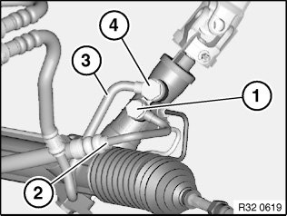
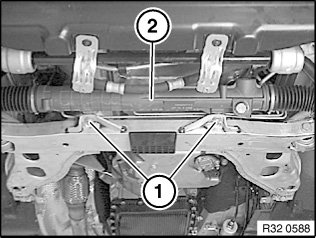
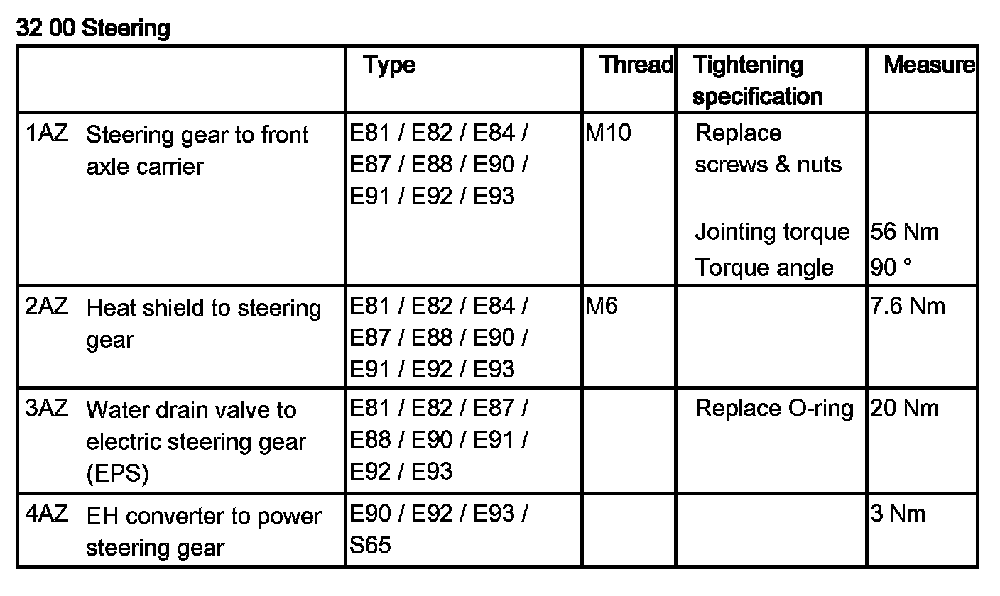
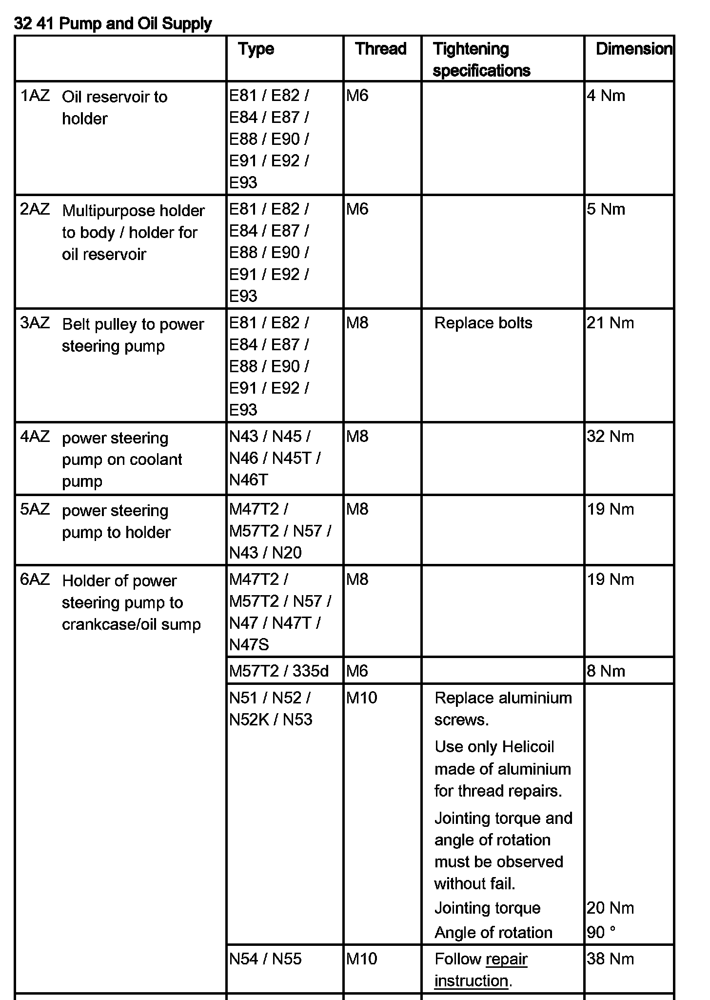

<!DOCTYPE html>
<html>
  <head>
    <title>32 13 060 Removing and Installing/Replacing Power Steering Gear — 2011 BMW 128i Coupe (E82) L6-3.0L (N52K) Service Manual | Operation CHARM</title>
    <meta name='description' content="Detailed repair manual for the 2011 BMW 128i Coupe (E82) L6-3.0L (N52K).">
    <link rel='stylesheet' href="../style.css">
    <meta name='viewport' content='width=device-width, initial-scale=1.0' />
  </head>
  <body>
    <div class='theme-colors header'>
      <div class='branding'><b>Operation CHARM</b>: Car repair manuals for everyone.</div>
<div class=breadcrumbs><a class='breadcrumb-part' href="../">Home</a> <b>&gt;&gt;</b> <a class='breadcrumb-part' href="../BMW/">BMW</a> <b>&gt;&gt;</b> <a class='breadcrumb-part' href="../BMW/2011/">2011</a> <b>&gt;&gt;</b> <a class='breadcrumb-part' href="../index.html">128i Coupe (E82) L6-3.0L (N52K)</a> <b>&gt;&gt;</b> <a class='breadcrumb-part' href="0.html">Repair and Diagnosis</a> <b>&gt;&gt;</b> <a class='breadcrumb-part' href="0.html#Steering%20and%20Suspension/">Steering and Suspension</a> <b>&gt;&gt;</b> <a class='breadcrumb-part' href="0.html#Steering%20and%20Suspension/Steering/">Steering</a> <b>&gt;&gt;</b> <a class='breadcrumb-part' href="1747.html">Steering Gear</a> <b>&gt;&gt;</b> <a class='breadcrumb-part' href="1747.html#Service%20and%20Repair/">Service and Repair</a> <b>&gt;&gt;</b> <a class='breadcrumb-part' href="1747.html#Service%20and%20Repair/Removal%20and%20Replacement/">Removal and Replacement</a> <b>&gt;&gt;</b> <a class='breadcrumb-part' href="11133.html">32 13 060 Removing and Installing/Replacing Power Steering Gear</a></div></div>
<div class="theme-colors floaty-message lemon-message">
  <b style="font-size: 1.5em; color: gold">Manuals through 2025 now available!</b>
  <br><br>
  Our trusted friends have launched a new website named LEMON, which has newer manuals. It also contains all the CHARM manuals.
  <br><br>
  LEMON is the spiritual successor to  CHARM, I recommend you try it!
  <br><br>
  Link: <a style='white-space: nowrap' href="../missing-page">lemon-manuals.la</a> or <a style='white-space: nowrap' href="../missing-page">lemon-manuals.org.ua</a>
  <br><br>
  (Some people have issue connecting. LEMON is investigating. For now, use Firefox or change your DNS server)
  <br><br>
  Or, hide this message: <a href="../missing-page">temporarily</a> or <a href="../missing-page">permanently</a>
</div>
<div class='main'>
<h1>32 13 060 Removing and Installing/Replacing Power Steering Gear</h1><b>32 13 060 Removing and installing/replacing power steering gear</b><br><br><div class='oxe-image'></div><br><br><br><br><span class='indent-2'>&#09;</span><b>Warning!</b><br><span class='indent-5'>&#09;</span>Danger of poisoning if oil is ingested/absorbed through the skin!<br><span class='indent-5'>&#09;</span>Risk of injury if oil comes into contact with eyes and skin!<br><br><span class='indent-2'>&#09;</span><b>Important!</b><br><span class='indent-5'>&#09;</span>Adhere to the utmost cleanliness. Do not allow any dirt to enter the hydraulic system.<br><span class='indent-5'>&#09;</span>Close off pipe connections with plugs.<br><br><div class='oxe-image'></div><br><br><br><br><span class='indent-2'>&#09;</span><b>Recycling:</b><br><span class='indent-5'>&#09;</span>Catch and dispose of hydraulic fluid in a suitable container.<br><span class='indent-5'>&#09;</span>Observe country-specific waste disposal regulations<br><br><div class='oxe-image'></div><br><br><br><br><span class='indent-2'>&#09;</span><b>Necessary preliminary tasks:</b><br><span class='indent-2'>&#09;</span>^<span class='indent-5'>&#09;</span>Draw off and dispose of hydraulic fluid from fluid reservoir<br><span class='indent-2'>&#09;</span>^<span class='indent-5'>&#09;</span>Remove front underbody protection<br><span class='indent-2'>&#09;</span>^<span class='indent-5'>&#09;</span>E88, E93: Remove V-strut on left and right<br><span class='indent-2'>&#09;</span>^<span class='indent-5'>&#09;</span>Remove both tie rod ends from swivel bearing<br><span class='indent-2'>&#09;</span>^<span class='indent-5'>&#09;</span>Replacement only: Remove both tie rod ends from <a href="1750.html">tie rod</a><br><span class='indent-2'>&#09;</span>^<span class='indent-5'>&#09;</span>Remove lower steering shaft from hydraulic <a href="1747.html">steering gear</a><br><br><div class='oxe-image'></div><br><br><br><br><span class='indent-2'>&#09;</span>If necessary, remove heat shield from power steering gear.<br><br><span class='indent-2'>&#09;</span>Release banjo bolts (1, 4).<br><br><span class='indent-2'>&#09;</span>Disconnect pressure line (2) and return line (3) from power steering gear.<br><br><span class='indent-2'>&#09;</span>If necessary, remove hydraulic lines with bracket from power steering gear.<br><br><span class='indent-2'>&#09;</span><b>Installation:</b><br><span class='indent-2'>&#09;</span>Replace all sealing rings.<br><br><span class='indent-2'>&#09;</span>Make sure hydraulic lines are laid without tension and with sufficient spacing to adjoining components.<br><br><span class='indent-2'>&#09;</span>Tightening torque 32 41 9AZ (pressure line).<br><br><span class='indent-2'>&#09;</span>Tightening torque 32 41 10AZ (return line).<br><br><div class='oxe-image'></div><br><br><br><br><span class='indent-2'>&#09;</span>Release nuts and remove screws (1) towards bottom.<br><br><span class='indent-2'>&#09;</span>Remove power steering gear (2) towards front.<br><br><span class='indent-2'>&#09;</span><b>Installation:</b><br><span class='indent-2'>&#09;</span>Replace screws and nuts.<br><br><span class='indent-2'>&#09;</span>Tightening torque 32 00 1AZ.<br><br><div class='oxe-image'></div><br><br><br><br><span class='indent-2'>&#09;</span><b>After installation:</b> <br><span class='indent-2'>&#09;</span>^<span class='indent-5'>&#09;</span>Fill and bleed hydraulic system<br><span class='indent-2'>&#09;</span>^<span class='indent-5'>&#09;</span>Check pipe connections for leaks<br><span class='indent-2'>&#09;</span>^<span class='indent-5'>&#09;</span>Perform chassis alignment check<br><span class='indent-2'>&#09;</span>^<span class='indent-5'>&#09;</span>Carry out steering angle sensor adjustment<br><br><div class='oxe-image'></div><br><br><br><h3>�\�:</h3><div class='oxe-image'></div><br><br><br><br></div>
<div class="theme-colors footer">
  <i>pro multis</i> · <a href="../about.html">About Operation CHARM</a>
</div>
<script src="../script.js"></script>
</body>
</html>
